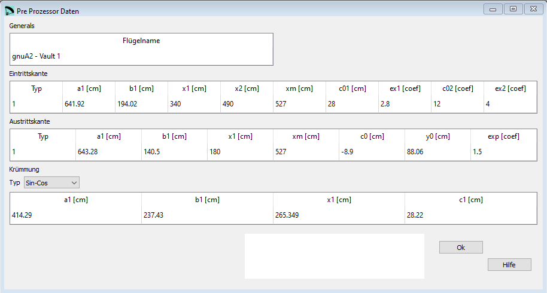
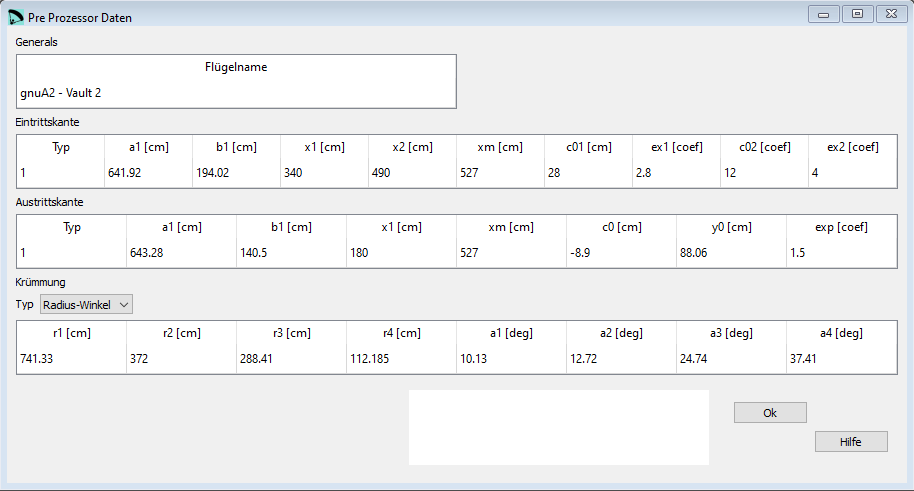

Pre-Processor Parameter¶
Im Fenster Zellverteilung werden die ersten drei Abschnitte der Eingabedatei des Pre-Prozessors editiert.
{kind=link}
Definition Eintrittskante¶
Beispiel:
**********************************
* 1. Leading edge parameters
**********************************
1
a1= 641.92
b1= 194.02
x1= 340
x2= 490
xm= 527
c0= 28
ex1= 2.8
c02= 12
ex2= 4.0
Die Eintrittskannte wird definiert mit einer Ellipse und den beiden Achsen a1 und b1, zentriert am Punkt 0.0.
Xm entspricht der halben Spannweite.
In den Versionen 1.4 und früher war es nur möglich die Ellipse mit einer parabolischen Korrektur (2. Grad) zu definieren. In späteren Versionen können 2 Korrekturen mit einer generischen Kurve N. Grades gemacht werden.
Die erste Korrektur beginnt am Punkt x1 mit einer Deflektion c01 und einer Variation vom Grad ex1.
Die zweite Korrektur beginnt am punkt x2 > x1 mit der Deflektion c02 und einer Variation vom Grad ex2.


Definition Austrittskante¶
Beispiel:
**********************************
* 2. Trailing edge parameters
**********************************
1
a1= 643.28
b1= 140.5
x1= 180
xm= 527
c0= -8.9
y0= 88.06
exp= 1.5
Die Austrittskante ist definiert mit einer Ellipse und den beiden Achsen a1 und b1, zentriert am Punkt 0,y0.
Xm entspricht der halben Spannweite.
In den Versionen 1.4 und früher war es nur möglich die Ellipse mit einer parabolischen Korrektur (2. Grad) zu definieren. In späteren Versionen kann eine Korrektur mit einer generischen Kurve N. Grades gemacht werden.
Die Korrektur beginnt am Punkt x1 und ermöglicht eine Deflektion c0 mit einer Variation von Grad exp.
Krümmung Typ 1¶
Beispiel für Krümmung Typ (das Fenster sieht man zuoberst auf der Seite):
**********************************
* 3. Vault
**********************************
1
a1= 414.2901
b1= 237.4300
x1= 265.3489
c1= 28.22
Die Form der Krümmung ist eine Ellipse mit den Halbachsen a1 (horizontal) und b1 (vertikal), aber mit einer Kosinus Modifikation ausgehend vom Punkt x1. Die halbe Spannweite ist verlängert mit c1:
for all y in [0,b1]:
If x < x1 then: x=a1*sqrt(1-((y*y)/(b1*b1)))
If x >= x1 then: x=a1*sqrt(1-((y*y)/(b1*b1)))+c1*(1-cos(((y1-y)/y1)*0.5*pi)
- Verification::
for y=0 x=a1*sqrt(1-((y*y)/(b1*b1)))+c1*1 for y=y1 x=a1*sqrt(1-((y*y)/(b1*b1)))+c1*0 where y1=b1*sqrt(1-((x1*x1)/(a1*a1)))
Zusätzliche Bilder zur Erklärung:

Krümmung Typ 2¶
{kind=link}
Beispiel Krümmung Typ 2:
**********************************
* 3. Vault
**********************************
2
741.33 10.13
372 12.72
288.41 24.74
112.185 37.41
Typ 2: Krümmung definiert durch tangentiale Kreise definiert in 4 Zeilen mit Radius und Winkel:
741.33 10.13
Radius (cm) Winkel (deg) um den der erste Kreis rotiert wird:
372 12.72
Radius (cm) Winkel (deg) um den der zweite Kreis rotiert wird:
288.41 24.74
Radius (cm) Winkel (deg) um den der dritte Kreis rotiert wird:
112.185 37.41
Radius (cm) Winkel (deg) um den der vierte Kreis rotiert wird.


Eine detaillierte Beschreibung in englisch findest Du auf der Laboratori d'envol website.